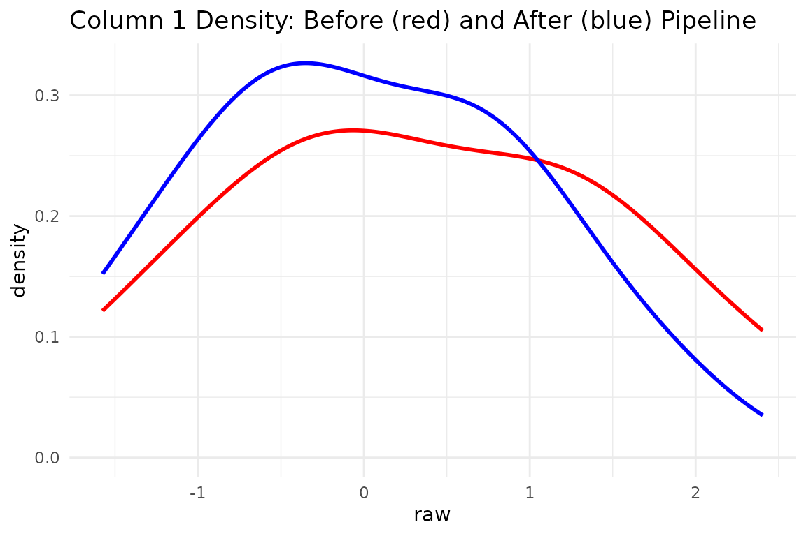

Pre-processing pipelines in multiblock
PreProcessing.Rmd1. Why a pipeline at all?
Most chemometrics / ML code mutates the data in place
(e.g. scale(X)), which is convenient in a script but
dangerous inside reusable functions:
- Data-leak avoidance: Fitted means/SDs live inside the pre-processor object, calculated only once (typically on training data).
-
Reversibility:
inverse_transform()gives you proper back-transforms (handy for reconstruction error or publication plots). -
Composability: You can nest simple steps together
(e.g.,
colscale(center())). -
Partial input: The same pipeline can process just
the columns you pass (
transform(..., colind = 1:3)), perfect for region-of-interest or block workflows.
The grammar is tiny:
| Verb | Role | Typical Call |
|---|---|---|
pass() |
do nothing (placeholder) | fit(pass(), X) |
center() |
subtract column means | fit(center(), X) |
standardize() |
centre and scale to unit SD | fit(standardize(), X) |
colscale() |
user-supplied weights/scaling | fit(colscale(type="z"), X) |
... |
(write your own) | any function returning a node |
The fit() verb is the bridge between defining your
preprocessing steps (the recipe) and actually applying them.
You call fit() on your recipe, providing your training
dataset. fit() calculates and stores the necessary
parameters (e.g., column means, standard deviations) from this data,
returning a fitted pre-processor object.
Once you have a fitted preprocessor object, it exposes three key methods:
| Method | Role | Typical Use Case |
|---|---|---|
fit_transform(prep, X) |
fits parameters and transforms X
|
Training set (convenience) |
transform(pp, Xnew) |
applies stored parameters to new data | Test/new data |
inverse_transform(pp, Y) |
back-transforms data using stored parameters | Interpreting results |
2. The 60-second tour
2.2 Centre → standardise
# Fit the preprocessor (calculates means & SDs from X) and transform
pp_std <- fit(standardize(), X)
Xs <- transform(pp_std, X)
# Check results
all(abs(colMeans(Xs)) < 1e-12) # TRUE: data is centered
#> [1] TRUE
round(apply(Xs, 2, sd), 6) # ~1: data is scaled
#> [1] 1 1 1 1
# Check back-transform
all.equal(inverse_transform(pp_std, Xs), X) # TRUE
#> [1] TRUE2.3 Partial input (region-of-interest)
Imagine a sensor fails and you only observe columns 2 and 4:
X_cols24 <- X[, c(2,4), drop=FALSE] # Keep as matrix
# Apply the *already fitted* standardizer using only columns 2 & 4
Xs_cols24 <- transform(pp_std, X_cols24, colind = c(2,4))
# Compare original columns 2, 4 with their transformed versions
head(cbind(X_cols24, Xs_cols24))
#> [,1] [,2] [,3] [,4]
#> [1,] 0.7635935 -0.2357066 1.65874473 -0.5049144
#> [2,] -0.7990092 -0.5428883 -0.64301984 -0.9030207
#> [3,] -1.1476570 -0.4333103 -1.15658932 -0.7610081
#> [4,] -0.2894616 -0.6494716 0.10756045 -1.0411523
#> [5,] -0.2992151 0.7267507 0.09319316 0.7424264
#> [6,] -0.4115108 1.1519118 -0.07222208 1.2934334
# Back-transform works too
X_rev_cols24 <- inverse_transform(pp_std, Xs_cols24, colind = c(2,4))
all.equal(X_rev_cols24, X_cols24) # TRUE
#> [1] TRUE3. Composing preprocessing steps
Because preprocessing steps nest, you can build pipelines by composing them:
# Define a pipeline: center, then scale to unit variance
# Fit the pipeline to the data
pp_pipe <- fit(standardize(), X)
# Apply the pipeline
Xp_pipe <- transform(pp_pipe, X)3.1 Quick visual
# Compare first column before and after pipeline
df_pipe <- tibble(raw = X[,1], processed = Xp_pipe[,1])
ggplot(df_pipe) +
geom_density(aes(raw), colour = "red", linewidth = 1) +
geom_density(aes(processed), colour = "blue", linewidth = 1) +
ggtitle("Column 1 Density: Before (red) and After (blue) Pipeline") +
theme_minimal()
4. Block-wise concatenation
Large multiblock models often want different preprocessing per block.
concat_pre_processors() glues several already
fitted pipelines into one wide transformer that understands global
column indices.
# Two fake blocks with distinct scales
X1 <- matrix(rnorm(10*5 , 10 , 5), 10, 5) # block 1: high mean
X2 <- matrix(rnorm(10*7 , 2 , 7), 10, 7) # block 2: low mean
# Fit separate preprocessors for each block
p1 <- fit(center(), X1)
p2 <- fit(standardize(), X2)
# Transform each block
X1p <- transform(p1, X1)
X2p <- transform(p2, X2)
# Concatenate the *fitted* preprocessors
block_indices_list = list(1:5, 6:12)
pp_concat <- concat_pre_processors(
list(p1, p2),
block_indices = block_indices_list
)
# Apply the concatenated preprocessor to the combined data
X_combined <- cbind(X1, X2)
X_combined_p <- transform(pp_concat, X_combined)
# Check means (block 1 only centered, block 2 standardized)
round(colMeans(X_combined_p), 2)
#> [1] 0 0 0 0 0 0 0 0 0 0 0 0
# Need only block 1 processed later? Use colind with global indices
X1_later_p <- transform(pp_concat, X1, colind = block_indices_list[[1]])
#> Warning: `apply_transform()` was deprecated in multivarious 0.3.0.
#> ℹ Please use `transform()` instead.
#> ℹ apply_transform() is deprecated. Use transform() for a more standard
#> interface.
#> ℹ The deprecated feature was likely used in the multivarious package.
#> Please report the issue to the authors.
#> This warning is displayed once every 8 hours.
#> Call `lifecycle::last_lifecycle_warnings()` to see where this warning was
#> generated.
all.equal(X1_later_p, X1p) # TRUE
#> [1] TRUE
# Need block 2 processed?
X2_later_p <- transform(pp_concat, X2, colind = block_indices_list[[2]])
all.equal(X2_later_p, X2p) # TRUE
#> [1] TRUECheck reversibility of concatenated pipeline
back_combined <- inverse_transform(pp_concat, X_combined_p)
# Compare first few rows/cols of original vs round-trip
knitr::kable(
head(cbind(orig = X_combined[, 1:6], recon = back_combined[, 1:6]), 3),
digits = 2,
caption = "First 3 rows, columns 1-6: Original vs Reconstructed"
)| 18.79 | 11.33 | 11.79 | 10.10 | 6.01 | 11.10 | 18.79 | 11.33 | 11.79 | 10.10 | 6.01 | 11.10 |
| 12.80 | 8.12 | 9.94 | 11.29 | 16.27 | -4.11 | 12.80 | 8.12 | 9.94 | 11.29 | 16.27 | -4.11 |
| 7.74 | 22.21 | 5.30 | 6.75 | 13.86 | 2.06 | 7.74 | 22.21 | 5.30 | 6.75 | 13.86 | 2.06 |
all.equal(X_combined, back_combined) # TRUE
#> [1] TRUE5. Inside the weeds (for authors & power users)
| Helper | Purpose |
|---|---|
fresh(pp) |
return the un-fitted recipe skeleton. Crucial for tasks like
cross-validation (CV), as it allows you to
re-fit() the pipeline using only the current
training fold’s data, preventing data leakage from other folds or the
test set. |
concat_pre_processors() |
build one big transformer out of already-fitted pieces. |
pass() vs fit(pass(), X)
|
pass() is a recipe; fit(pass(), X) is a
fitted identity transformer. |
| caching | Fitted preprocessor objects store parameters (means, SDs) for fast re-application. |
You rarely need to interact with these helpers directly; they exist so model-writers (e.g. new PCA flavours) can avoid boiler-plate.
6. Key take-aways
-
Write once: Define a preprocessing recipe (e.g.,
colscale(center())) and reuse it safely across CV folds usingfit()on each fold’s training data. - No data leakage: Parameters live inside the fitted preprocessor object, calculated only from training data.
-
Composable & reversible: Nest preprocessing
steps, extract the original recipe with
fresh(), and back-transform whenever you need results in original units usinginverse_transform(). - Block-aware: The same mechanism powers multiblock PCA, CCA, ComDim…
Happy projecting!
Session info
sessionInfo()
#> R version 4.5.2 (2025-10-31)
#> Platform: x86_64-pc-linux-gnu
#> Running under: Ubuntu 24.04.3 LTS
#>
#> Matrix products: default
#> BLAS: /usr/lib/x86_64-linux-gnu/openblas-pthread/libblas.so.3
#> LAPACK: /usr/lib/x86_64-linux-gnu/openblas-pthread/libopenblasp-r0.3.26.so; LAPACK version 3.12.0
#>
#> locale:
#> [1] LC_CTYPE=C.UTF-8 LC_NUMERIC=C LC_TIME=C.UTF-8
#> [4] LC_COLLATE=C.UTF-8 LC_MONETARY=C.UTF-8 LC_MESSAGES=C.UTF-8
#> [7] LC_PAPER=C.UTF-8 LC_NAME=C LC_ADDRESS=C
#> [10] LC_TELEPHONE=C LC_MEASUREMENT=C.UTF-8 LC_IDENTIFICATION=C
#>
#> time zone: UTC
#> tzcode source: system (glibc)
#>
#> attached base packages:
#> [1] stats graphics grDevices utils datasets methods base
#>
#> other attached packages:
#> [1] ggplot2_4.0.0 tibble_3.3.0 dplyr_1.1.4 multivarious_0.2.0
#>
#> loaded via a namespace (and not attached):
#> [1] GPArotation_2025.3-1 sass_0.4.10 future_1.67.0
#> [4] generics_0.1.4 shape_1.4.6.1 lattice_0.22-7
#> [7] listenv_0.10.0 digest_0.6.37 magrittr_2.0.4
#> [10] evaluate_1.0.5 grid_4.5.2 RColorBrewer_1.1-3
#> [13] iterators_1.0.14 fastmap_1.2.0 foreach_1.5.2
#> [16] jsonlite_2.0.0 Matrix_1.7-4 glmnet_4.1-10
#> [19] ggrepel_0.9.6 RSpectra_0.16-2 survival_3.8-3
#> [22] scales_1.4.0 pls_2.8-5 codetools_0.2-20
#> [25] textshaping_1.0.4 jquerylib_0.1.4 cli_3.6.5
#> [28] crayon_1.5.3 rlang_1.1.6 chk_0.10.0
#> [31] parallelly_1.45.1 future.apply_1.20.0 splines_4.5.2
#> [34] withr_3.0.2 cachem_1.1.0 yaml_2.3.10
#> [37] tools_4.5.2 parallel_4.5.2 corpcor_1.6.10
#> [40] globals_0.18.0 rsvd_1.0.5 assertthat_0.2.1
#> [43] vctrs_0.6.5 R6_2.6.1 matrixStats_1.5.0
#> [46] lifecycle_1.0.4 fs_1.6.6 irlba_2.3.5.1
#> [49] ragg_1.5.0 pkgconfig_2.0.3 desc_1.4.3
#> [52] pkgdown_2.1.3 pillar_1.11.1 bslib_0.9.0
#> [55] geigen_2.3 gtable_0.3.6 glue_1.8.0
#> [58] Rcpp_1.1.0 systemfonts_1.3.1 xfun_0.54
#> [61] tidyselect_1.2.1 svd_0.5.8 knitr_1.50
#> [64] farver_2.1.2 htmltools_0.5.8.1 labeling_0.4.3
#> [67] rmarkdown_2.30 compiler_4.5.2 S7_0.2.0